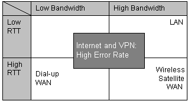

Several network environments affect the networked behavior of an application. Properties that differentiate network environments include low versus high bandwidth, and low versus high RTT. Network environments affect transactional and streaming applications in different ways. Transactional applications are more sensitive to RTT; streaming applications are more sensitive to bandwidth-delay products.

Dial-up networks and some wireless networks have a variable RTT. Satellite networks generally have an asymmetric bandwidth between upstream and downstream. Wireless LAN and xDSL are good examples of networks with bandwidth-delay products similar to that of Fast Ethernet.
High-performance Windows Sockets Applications
Â
Â